Son Excellence Monsieur Macky SALL, Président de la République du Sénégal
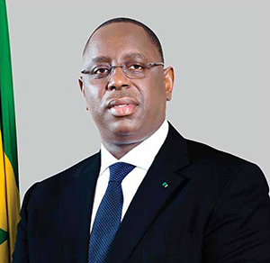« Le Programme d’Alphabétisation et d’Apprentissage de Métiers contribuera à la prise en charge des couches vulnérables, en particulier pour l’éducation des enfants dans les Ecoles Communautaires de Base en milieu défavorisé, l’emploi des jeunes et l’autonomisation socio-économique des femmes».
Son Excellence, Dr Mohamed Ahmed Ali, Président du Groupe de la Banque Islamique de Développement (BID)
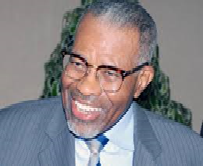«Le PALAM/VOLIP/SENEGAL est le premier programme pilote financé par le Fonds de Solidarité Islamique pour le Développement (FSID) et s’inscrit dans l’Accord-Cadre global, signé à Dakar, le 31 juillet 2008 entre le Gouvernement du Sénégal et la Banque Islamique de Développement (BID)».
Madame Mariama SARR, Ministre de la Femme, de la Famille et de l'Enfance
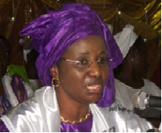« La micro-finance islamique représente aujourd’hui un nouveau mécanisme pertinent de financement des groupes vulnérables (jeunes et femmes) et j’estime d’ailleurs que la micro-finance et le financement islamique ont beaucoup de points communs. Mais la micro-finance islamique porte sur le financement d’activités réelles, génératrices de revenus et se présente comme un instrument efficace de lutte contre la pauvreté ».
Dr. Abderrahman BEDDI Chef de Division Education Département Développement Humain/BI
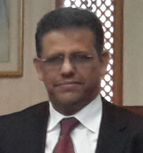« Grâce aux résultats satisfaisants obtenus, le PALAM/VOLIP/SENEGAL est, aujourd’hui, la référence, le modèle de la BID pour tous les autres PALAM/VOLIP/Pays »
Monsieur Sidy Mouhamed Ould TALEB Ancien Directeur du Bureau Régional de la BID à Dakar
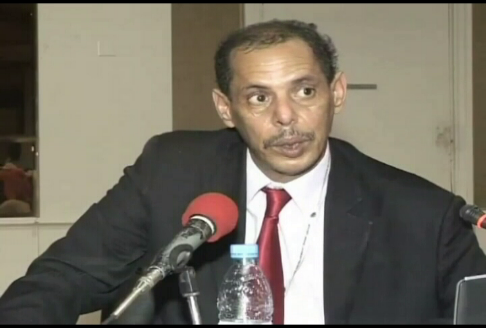« L’équipe de l’Unité de Gestion du PALAM appuyée par ses partenaires institutionnels a engrangé de résultats que nous jugeons satisfaisants, je dirais même plus que satisfaisants… »
Monsieur Musa SILAH, Directeur du Bureau Régional de la BID à Dakar
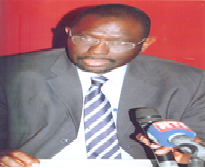« Les résultats forts encourageants obtenus par le PALAM/VOLIP/SENEGAL dépassent aujourd’hui les frontières du Sénégal. En effet, après un début certes difficile, le PALAM/ VOLIP/SENEGAL est désormais la référence pour tous les autres PALAM de la BID. En témoignent, les multiples sollicitations adressées par les autres PALAM et surtout la brillante organisation en Octobre 2013 de la Conférence Internationale des PALAM/VOLIP à Dakar»
Monsieur Cheick Amadou Kader DIALLO Task Manager PALAM/SENEGAL Département Développement Humain/BID
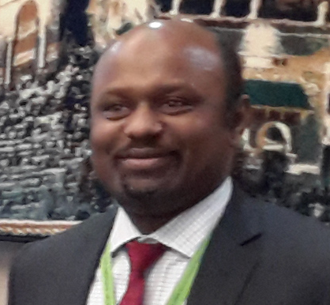« Le PALAM est un Programme complexe et difficile à mettre en œuvre. Mais c’est un programme auquel je crois, qui peut réussir et atteindre ses objectifs s’il est mis en œuvre par une équipe de projet forte et constituée d’Experts très compétents et dédiés, tel est le cas de l’unité de gestion du PALAM du Sénégal qui a travaillé dur et sans relâche durant cinq années sous la direction et le leadership de Mme MBACKE Khady Fall Ndiaye, une femme très engagée, exceptionnelle, d’une grande qualité et déterminée à réussir. Elle a réussi son PALAM avec son équipe, ce qui a fait du PALAM Sénégal une référence, un modèle pour les autres projets cofinancés par la BID dont les PALAM dans les autres pays membres»
Madame MBACKE Khady Fall Ndiaye Directrice du PALAM/SENEGAL
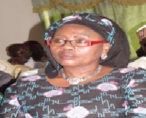« La mise en œuvre du PALAM doit reposer sur une approche de synergie et de complémentarité avec d’autres programmes notamment le Programme d’Urgence de Développement Communautaire, initié par Son Excellence Monsieur le Président de la République, et d’autres initiatives similaires de la BID pour une plus grande efficience des interventions favorisant ainsi l’émergence irréversible des communautés de base».
Monsieur Fayçal SLAMA Responsable de formation à IRTI/BID
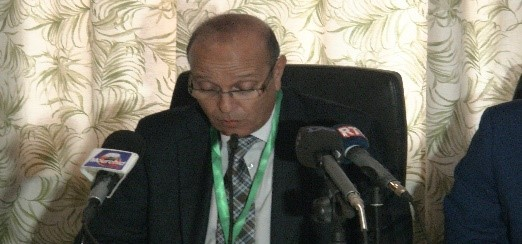« Les résultats de l’Atelier de renforcement des capacités en Finance Islamique en direction des partenaires d’exécution du PALAM qui s’est tenu du 18 au 22 Avril 2016, à Dakar, sont satisfaisants et IRTI/BID est disposée à accompagner le PALAM dans ce genre d’initiative »
Monsieur SALEH YOUSSOUF ABDELMANANE Coordonnateur du PALAM/TCHAD
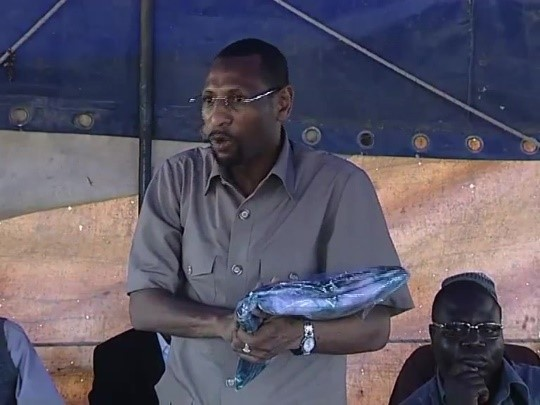« N’achetez pas ailleurs, achetez chez-vous, quand vous aurez tout consommé ou porté chez-vous, vous allez exporter jusqu’au Tchad »
Amath SOW Président de FRADEV AFRIQUE Opérateur technique partenaire du PALAM
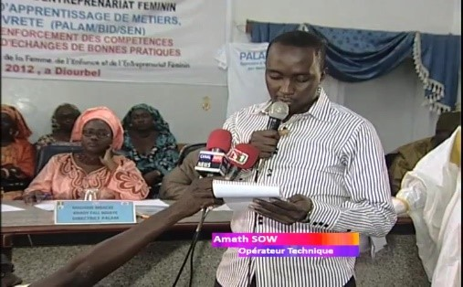« La concertation est mise au centre du PALAM ce qui a favorisé la mise en place de cadres aux niveaux national, régional et local »
Seynabou TOP Présidente des groupements de femmes de Touba Aly Mbenda
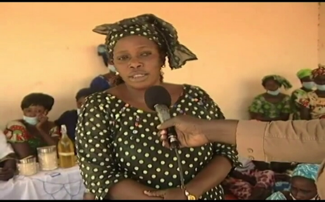« Les femmes transformaient l’arachide mais traditionnellement sans un bon triage des graines d’arachides mais avec l’appui du PALAM, on a renforcé nos capacités et nous pouvons aujourd’hui participer aux expositions en particulier à la FIARA puisque la pâte d’arachide que nous fabriquons maintenant n’aura plus d’inconvénients car de meilleure qualité…».